Beyond the Adjacency Matrix
We have 5 nodes \(\{A, B, C, D, E\}\). Let’s build the \(5 \times 5\) reachability matrix. Diagonals are blocked (--).
| A | B | C | D | E | |
|---|---|---|---|---|---|
| A | – | ? | ? | ? | ? |
| B | ? | – | ? | ? | ? |
| C | ? | ? | – | ? | ? |
| D | ? | ? | ? | – | ? |
| E | ? | ? | ? | ? | – |
Let’s trace which nodes can be reached by starting a directed walk at node A.
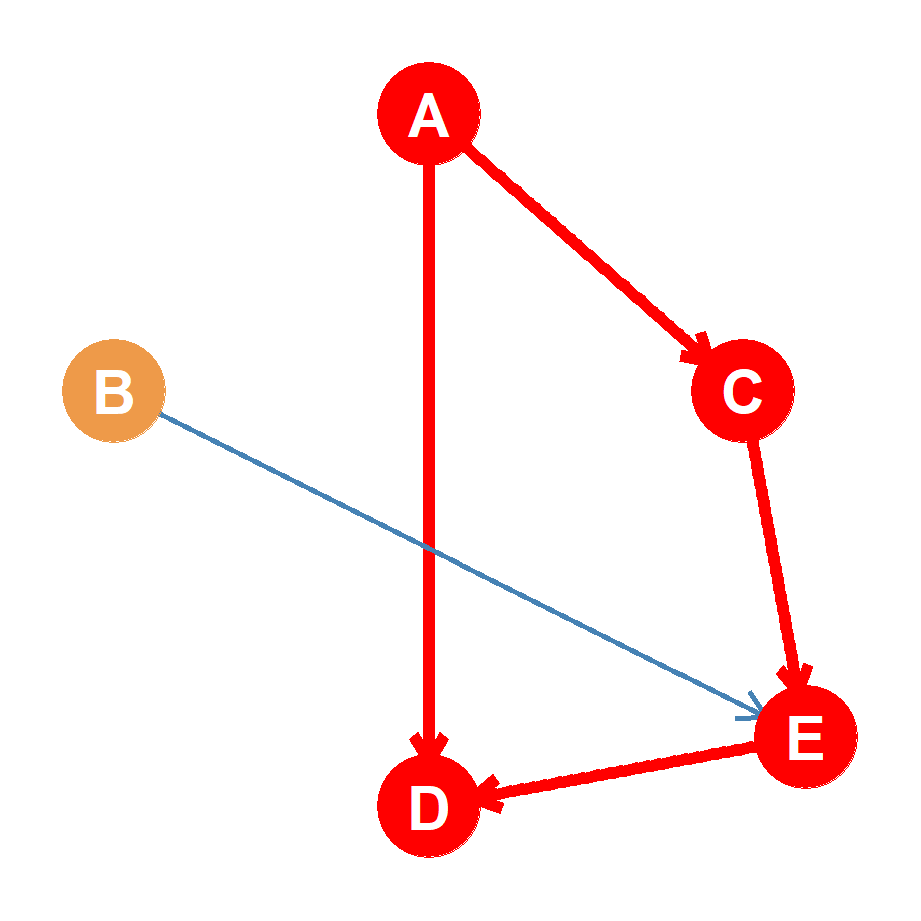
(--, 0, 1, 1, 1)Let’s trace which nodes can be reached by starting a directed walk at node B.
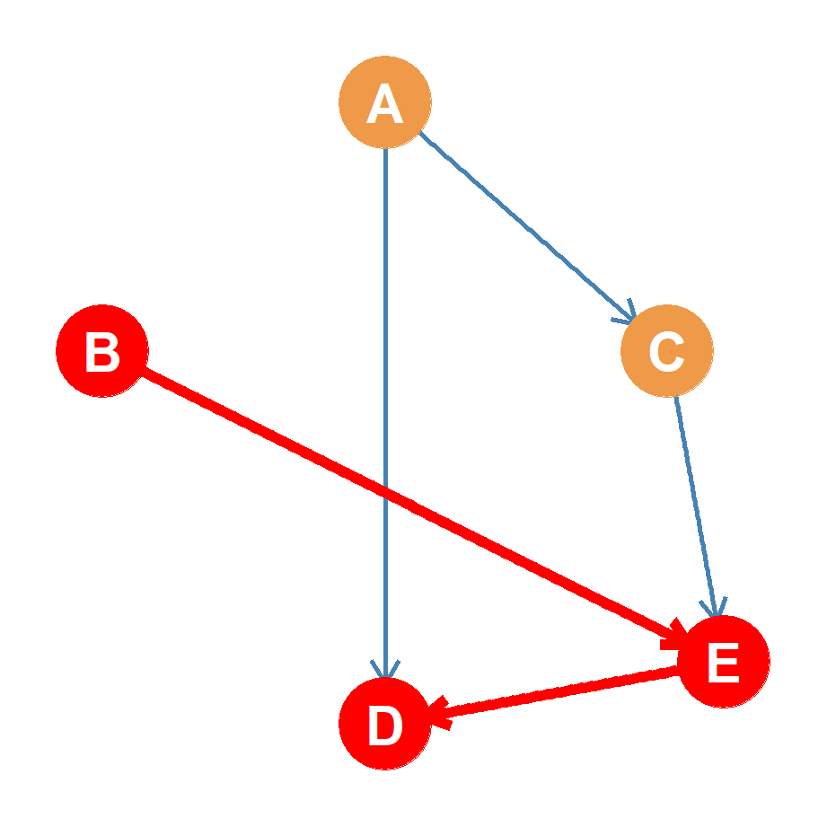
(0, --, 0, 1, 1)Repeating this row-by-row analysis yields the completed reachability matrix.
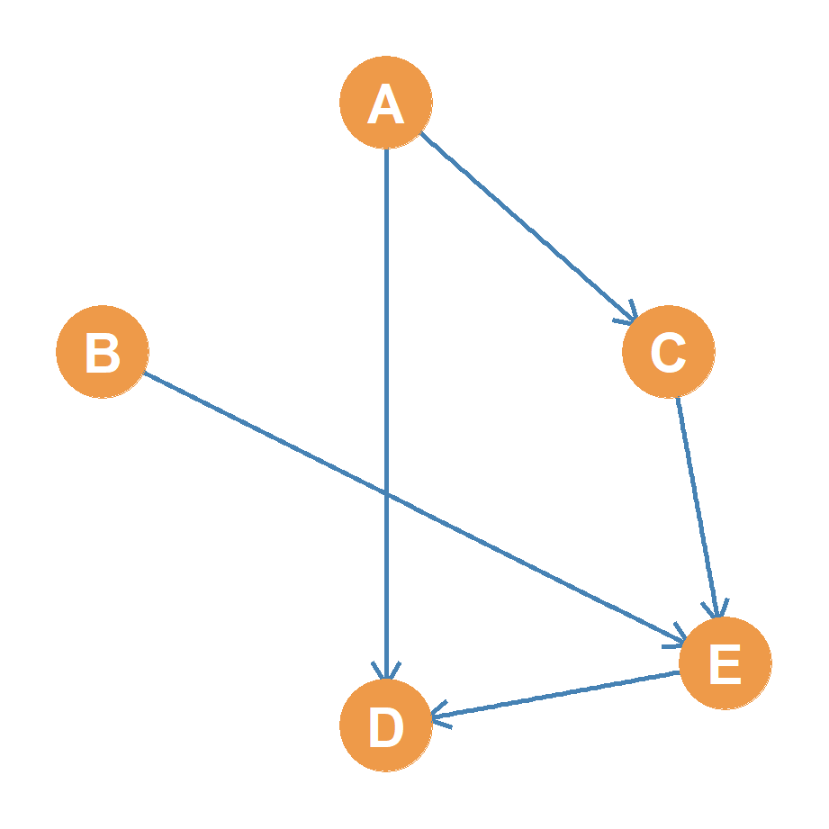
| A | B | C | D | E | |
|---|---|---|---|---|---|
| A | – | 0 | 1 | 1 | 1 |
| B | 0 | – | 0 | 1 | 1 |
| C | 0 | 0 | – | 1 | 1 |
| D | 0 | 0 | 0 | – | 0 |
| E | 0 | 0 | 0 | 1 | – |
Every pair of nodes is mutually reachable.
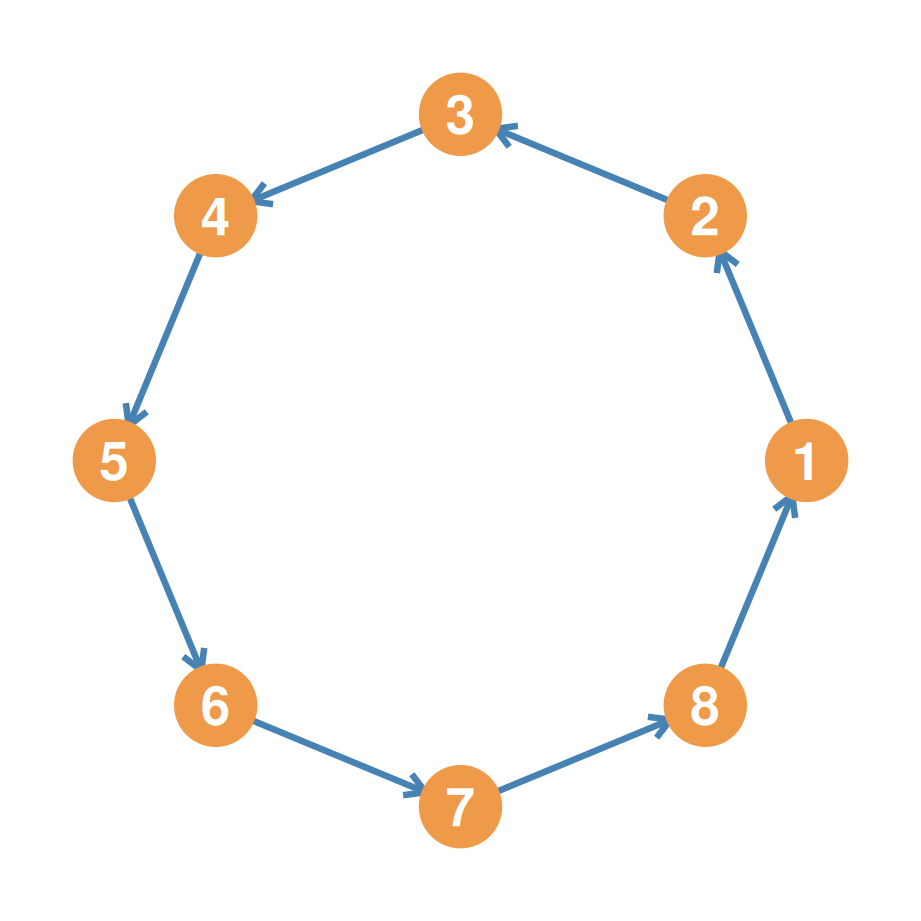
| 1 | 2 | 3 | 4 | 5 | 6 | 7 | 8 | |
|---|---|---|---|---|---|---|---|---|
| 1 | – | 1 | 1 | 1 | 1 | 1 | 1 | 1 |
| 2 | 1 | – | 1 | 1 | 1 | 1 | 1 | 1 |
| 3 | 1 | 1 | – | 1 | 1 | 1 | 1 | 1 |
| 4 | 1 | 1 | 1 | – | 1 | 1 | 1 | 1 |
| 5 | 1 | 1 | 1 | 1 | – | 1 | 1 | 1 |
| 6 | 1 | 1 | 1 | 1 | 1 | – | 1 | 1 |
| 7 | 1 | 1 | 1 | 1 | 1 | 1 | – | 1 |
| 8 | 1 | 1 | 1 | 1 | 1 | 1 | 1 | – |
At least one directed path exists between every pair, but not necessarily in both directions.
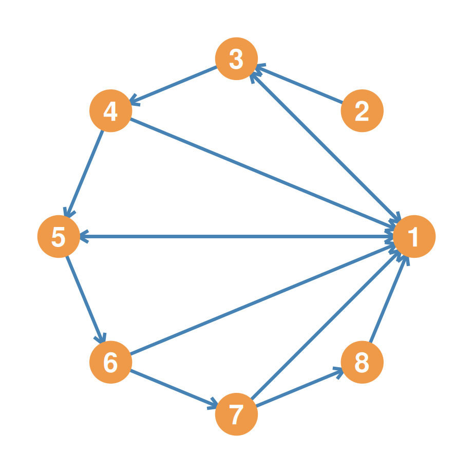
| 1 | 2 | 3 | 4 | 5 | 6 | 7 | 8 | |
|---|---|---|---|---|---|---|---|---|
| 1 | – | 0 | 1 | 1 | 1 | 1 | 1 | 1 |
| 2 | 1 | – | 1 | 1 | 1 | 1 | 1 | 1 |
| 3 | 1 | 0 | – | 1 | 1 | 1 | 1 | 1 |
| 4 | 1 | 0 | 1 | – | 1 | 1 | 1 | 1 |
| 5 | 1 | 0 | 1 | 1 | – | 1 | 1 | 1 |
| 6 | 1 | 0 | 1 | 1 | 1 | – | 1 | 1 |
| 7 | 1 | 0 | 1 | 1 | 1 | 1 | – | 1 |
| 8 | 1 | 0 | 1 | 1 | 1 | 1 | 1 | – |
At least one pair of nodes is completely mutually unreachable via directed paths.
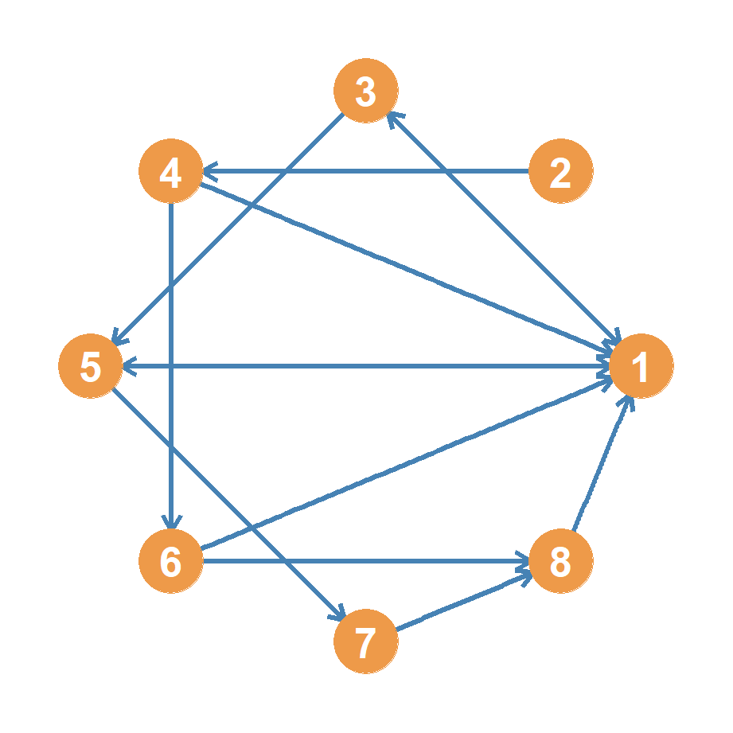
| 1 | 2 | 3 | 4 | 5 | 6 | 7 | 8 | |
|---|---|---|---|---|---|---|---|---|
| 1 | – | 0 | 1 | 1 | 1 | 1 | 0 | 1 |
| 2 | 1 | – | 1 | 1 | 1 | 1 | 0 | 1 |
| 3 | 1 | 0 | – | 1 | 1 | 1 | 0 | 1 |
| 4 | 1 | 0 | 1 | – | 1 | 1 | 0 | 1 |
| 5 | 1 | 0 | 1 | 1 | – | 1 | 0 | 1 |
| 6 | 1 | 0 | 1 | 1 | 1 | – | 0 | 1 |
| 7 | 1 | 0 | 1 | 1 | 1 | 1 | – | 1 |
| 8 | 1 | 0 | 1 | 1 | 1 | 1 | 0 | – |
| Value | Meaning |
|---|---|
| \(C = 1.0\) | Strongly connected network (perfect reachability, all-ones matrix). |
| \(C < 1.0\) | Unilaterally or weakly connected network (contains zeros). |
| \(C = 0.0\) | Completely disconnected network (all zeros). |
We start with our undirected reference graph. Nodes with direct connections get a geodesic distance of 1.0.
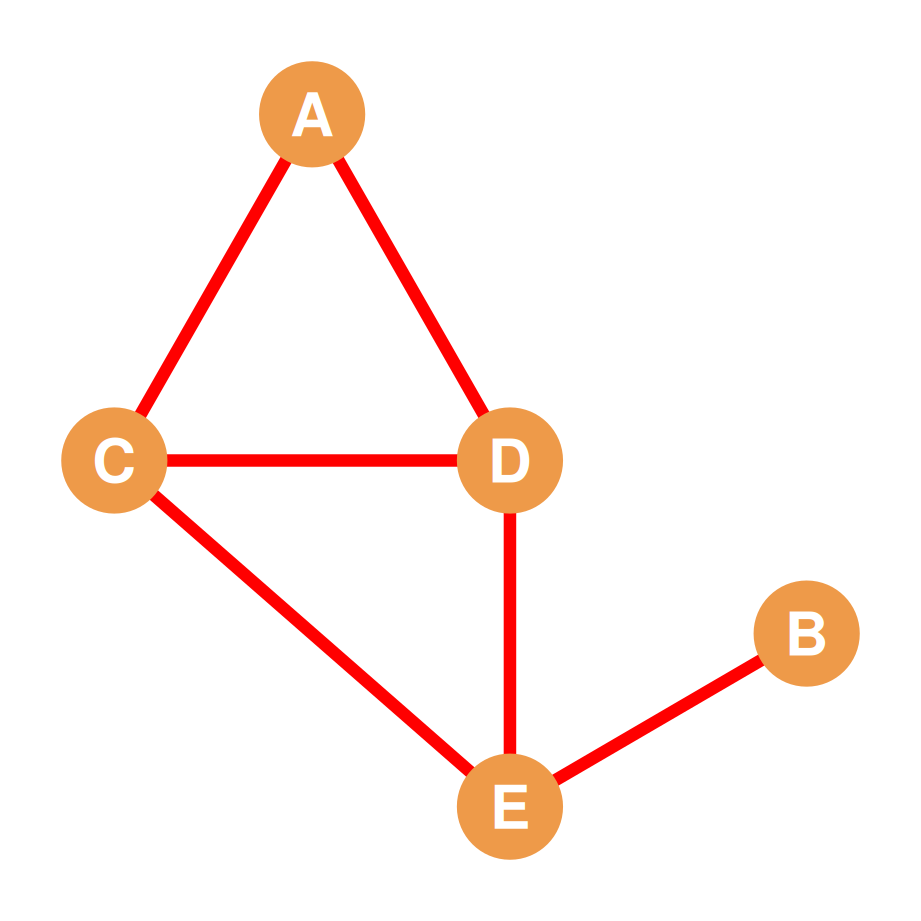
| A | B | C | D | E | |
|---|---|---|---|---|---|
| A | 0 | ? | 1 | 1 | ? |
| B | ? | 0 | ? | ? | 1 |
| C | 1 | ? | 0 | 1 | 1 |
| D | 1 | ? | 1 | 0 | 1 |
| E | ? | 1 | 1 | 1 | 0 |
For non-adjacent nodes, we calculate the length of the shortest path connecting them.
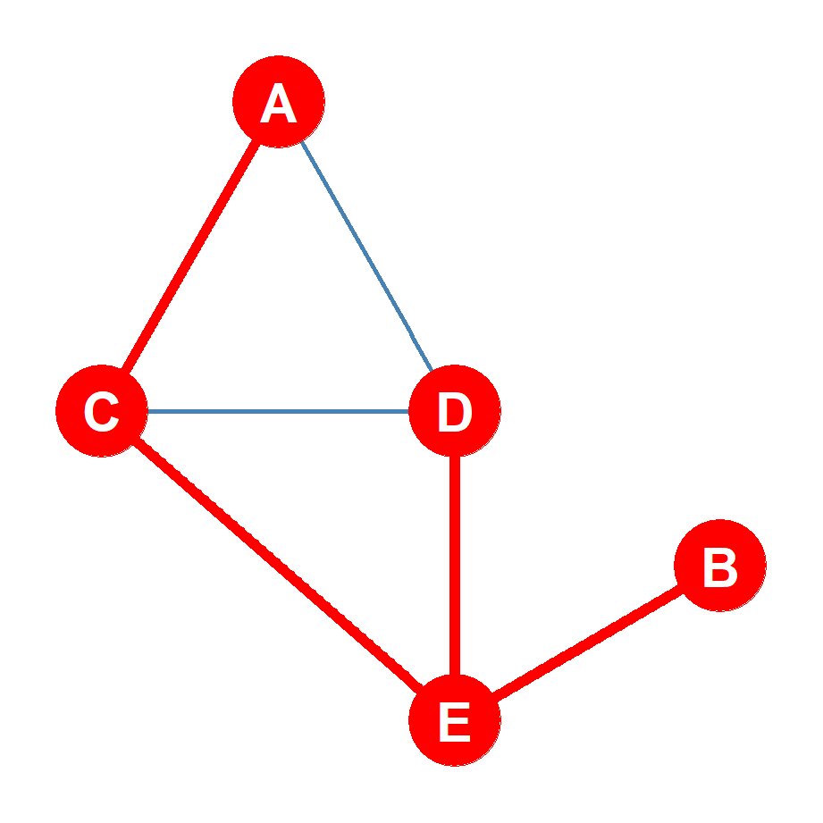
| A | B | C | D | E | |
|---|---|---|---|---|---|
| A | 0 | ? | 1 | 1 | 2 |
| B | ? | 0 | 2 | 2 | 1 |
| C | 1 | 2 | 0 | 1 | 1 |
| D | 1 | 2 | 1 | 0 | 1 |
| E | 2 | 1 | 1 | 1 | 0 |
We compute the remaining non-adjacent pair, representing the maximum distance in the graph.
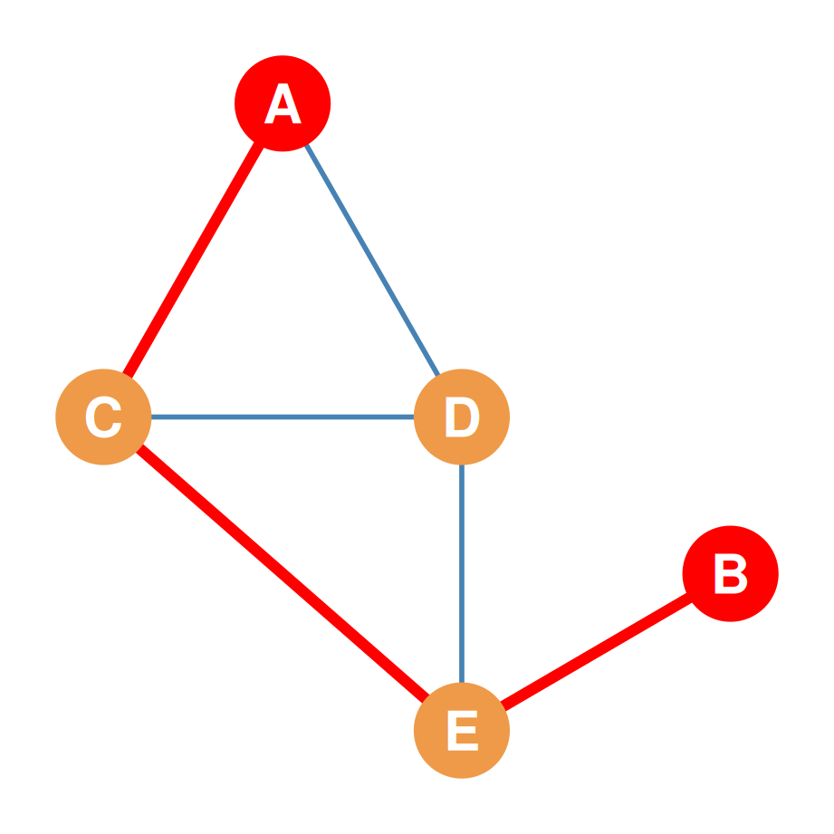
| A | B | C | D | E | |
|---|---|---|---|---|---|
| A | 0 | 3 | 1 | 1 | 2 |
| B | 3 | 0 | 2 | 2 | 1 |
| C | 1 | 2 | 0 | 1 | 1 |
| D | 1 | 2 | 1 | 0 | 1 |
| E | 2 | 1 | 1 | 1 | 0 |
For directed graphs, we follow the same process but respect the arrows (Sender \(\rightarrow\) Receiver).
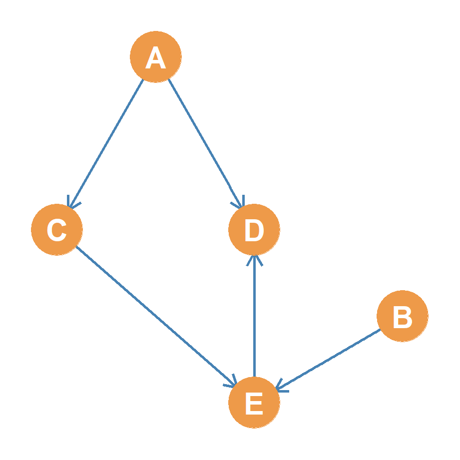
| A | B | C | D | E | |
|---|---|---|---|---|---|
| A | 0 | ? | 1 | 1 | 2 |
| B | ? | 0 | ? | 2 | 1 |
| C | ? | ? | 0 | 2 | 1 |
| D | ? | ? | ? | 0 | ? |
| E | ? | ? | ? | 1 | 0 |
If a node \(i\) cannot reach node \(j\) via any directed path, their geodesic distance is Infinity (\(\infty\)).
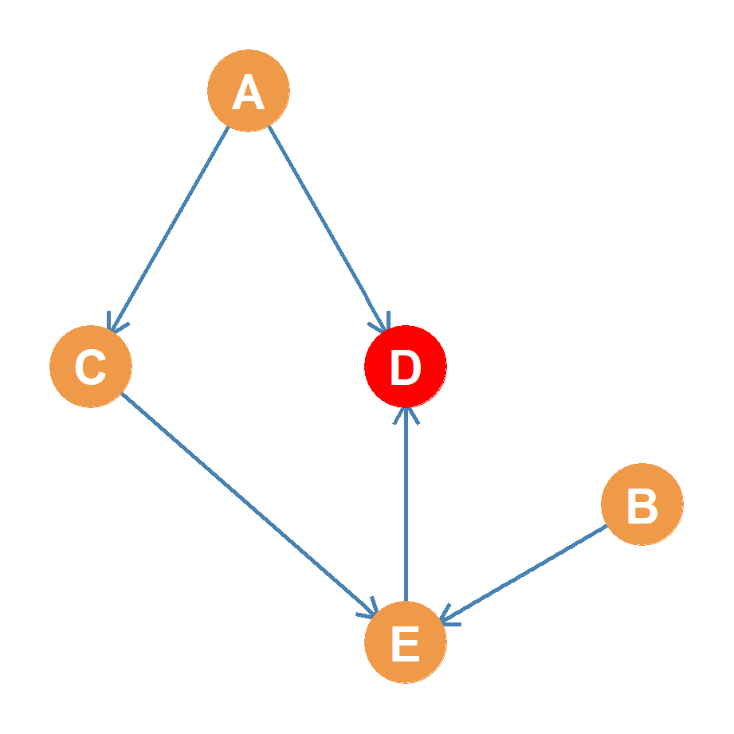
| A | B | C | D | E | |
|---|---|---|---|---|---|
| A | 0 | \(\infty\) | 1 | 1 | 2 |
| B | \(\infty\) | 0 | \(\infty\) | 2 | 1 |
| C | \(\infty\) | \(\infty\) | 0 | 2 | 1 |
| D | \(\infty\) | \(\infty\) | \(\infty\) | 0 | \(\infty\) |
| E | \(\infty\) | \(\infty\) | \(\infty\) | 1 | 0 |
Eccentricity is calculated as the maximum value in each row of the Geodesic Distance Matrix (excluding diagonal 0s).
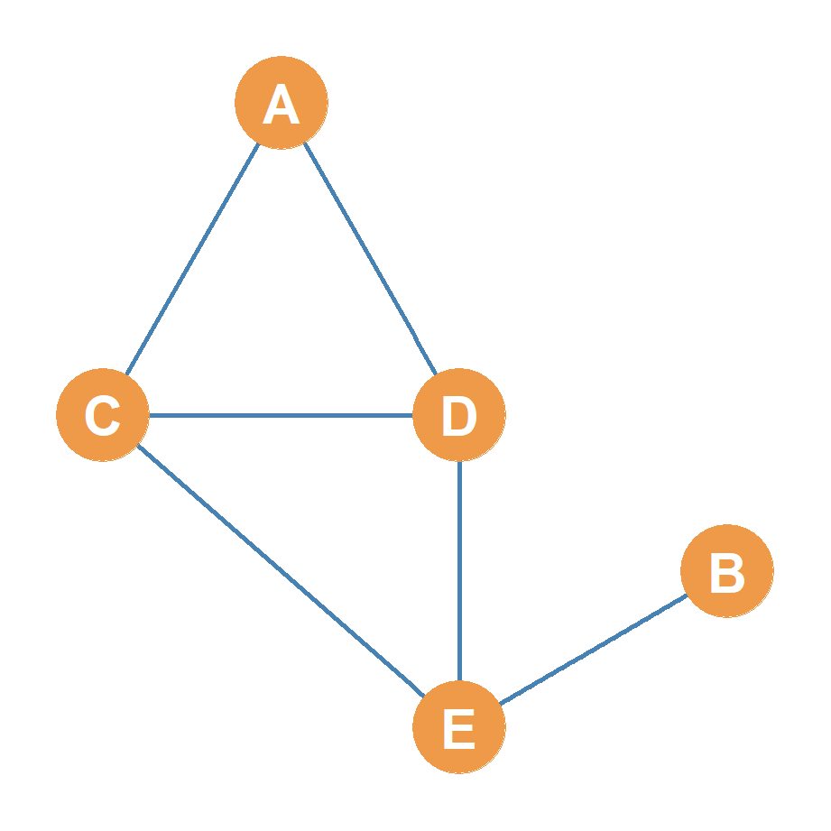
| A | B | C | D | E | Row Max (\(e\)) | |
|---|---|---|---|---|---|---|
| A | 0 | 3 | 1 | 1 | 2 | \(e(A) = 3\) |
| B | 3 | 0 | 2 | 2 | 1 | \(e(B) = 3\) |
| C | 1 | 2 | 0 | 1 | 1 | \(e(C) = 2\) |
| D | 1 | 2 | 1 | 0 | 1 | \(e(D) = 2\) |
| E | 2 | 1 | 1 | 1 | 0 | \(e(E) = 2\) |
Overlap measures the proportion of shared neighbors (Green node) relative to unique neighbors.
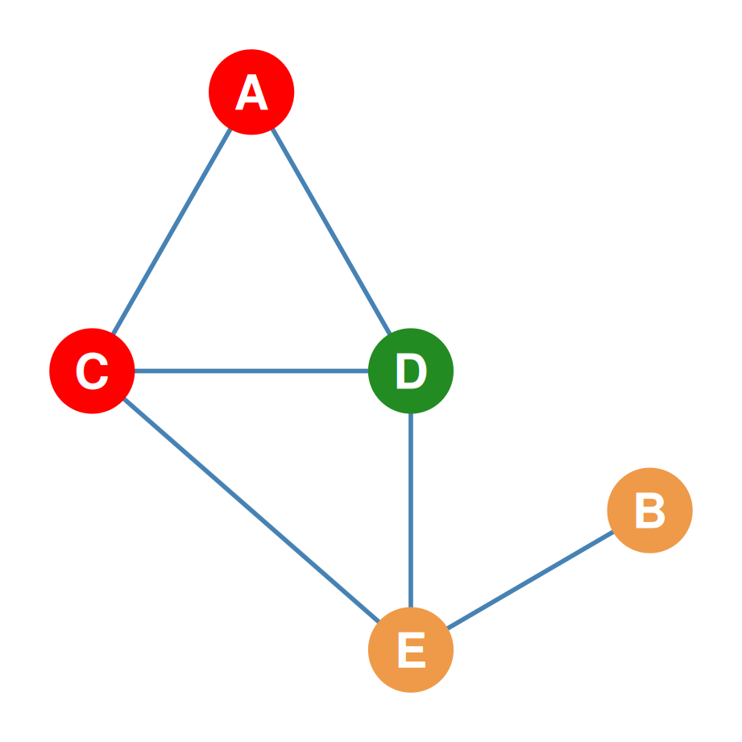
| A | B | C | D | E | |
|---|---|---|---|---|---|
| A | – | 0.00 | 0.25 | 0.50 | 0.40 |
| B | 0.00 | – | 0.33 | 0.33 | 0.33 |
| C | 0.25 | 0.33 | – | 0.50 | 0.50 |
| D | 0.50 | 0.33 | 0.50 | – | 0.50 |
| E | 0.40 | 0.33 | 0.50 | 0.50 | – |
Let’s compute the neighborhood overlap \(O_{AC}\) for nodes \(A\) and \(C\) using our highlighted graph: